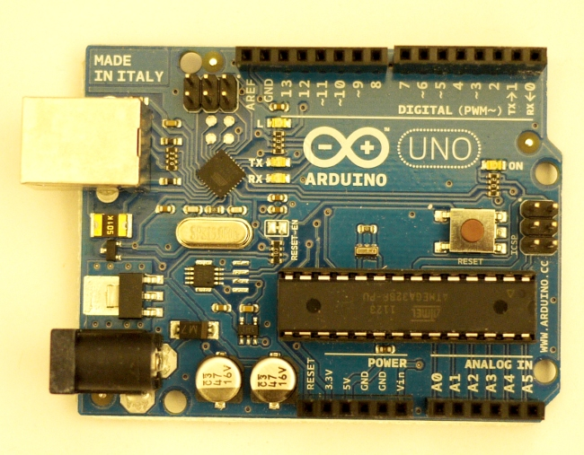
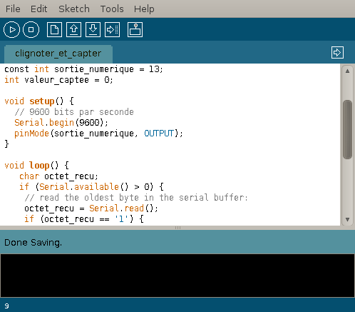

Arduino est une plate-forme de prototypage d'objets interactifs à usage créatif constituée d'une carte électronique et d'un environnement de programmation.
Sans tout connaître ni tout comprendre de l'électronique, cet environnement matériel et logiciel permet à l'utilisateur de formuler ses projets par l'expérimentation directe avec l'aide de nombreuses ressources disponibles en ligne.
Pont tendu entre le monde réel et le monde numérique, Arduino permet d'étendre les capacités de relations humain/machine ou environnement/machine.
Arduino est un projet dont les sources sont ouvertes : c'est à dire que les plans, les schémas, etc sont accessibles et libres de droits. De plus, la très importante communauté d'utilisateurs et de concepteurs permet à chacun de trouver les réponses à ses questions et apporte un boulot énorme de documentation du projet.
Matériel
La carte Arduino repose sur un circuit intégré (un mini ordinateur appelé également micro-contrôleur) associée à des entrées et sorties qui permettent à l'utilisateur de brancher différents types d'éléments externes :
- Côté entrées, des capteurs qui collectent des informations sur leur environnement comme la variation de température via une sonde thermique, le mouvement via un détecteur de présence ou un accéléromètre, le contact via un bouton-poussoir, etc.
- Côté sorties, des actionneurs qui agissent sur le monde physique telle une petite lampe qui produit de la lumière, un moteur qui actionne un bras articulé, etc.
Comme le logiciel Arduino, le circuit électronique de cette plaquette est libre et ses plans sont disponibles sur internet. On peut donc les étudier et créer des dérivés. Plusieurs constructeurs proposent ainsi différents modèles de circuits électroniques programmables et utilisables avec le logiciel Arduino1.
Il existe plusieurs variétés de cartes Arduino. La figure ci-dessous montre par exemple, la dernière version de la carte Arduino : la « Uno », sortie en 2010. Cette carte électronique peut être autonome et fonctionner sans ordinateur ou servir d'interface avec celui-ci.

Logiciel
L'environnement de programmation Arduino (EDI en français et IDE en anglais) est une application écrite en Java inspirée du langage Processing 2 . L'IDE permet d'écrire, de modifier un programme et de le convertir en une série d'instructions compréhensibles pour la carte.

Quelques outils fréquemment utilisés avec Arduino
Lorsque l'Arduino est connecté à un ordinateur, il est capable de communiquer avec diverses applications, notamment :
Processing
Conçu par des artistes, pour des artistes, Processing 3 est un environnement de création fréquemment utilisé pour générer des œuvres multimédias à partir d'un code informatique sur ordinateur. L'attrait de ce logiciel réside dans sa simplicité d'utilisation et dans la diversité de ses applications : image, son, applications sur Internet et sur téléphones mobiles, conception d'objets électroniques interactifs.
Processing fédère une forte communauté d'utilisateurs professionnels et amateurs : artistes, graphistes, vidéastes, typographes, architectes, web designers et designers en général. Il est également utilisé par des enseignants en arts qui souhaitent familiariser leurs étudiants avec les potentialités artistiques de la programmation, les concepteurs du logiciel l'ayant pensé dès l'origine comme un outil d'apprentissage.
Un exemple de code Processing est utilisé dans le projet « Oscilloscope » (voir section « Projets », chapitre « Oscilloscope »).
Processing
Conçu par des artistes, pour des artistes, Processing 3 est un environnement de création fréquemment utilisé pour générer des œuvres multimédias à partir d'un code informatique sur ordinateur. L'attrait de ce logiciel réside dans sa simplicité d'utilisation et dans la diversité de ses applications : image, son, applications sur Internet et sur téléphones mobiles, conception d'objets électroniques interactifs.
Processing fédère une forte communauté d'utilisateurs professionnels et amateurs : artistes, graphistes, vidéastes, typographes, architectes, web designers et designers en général. Il est également utilisé par des enseignants en arts qui souhaitent familiariser leurs étudiants avec les potentialités artistiques de la programmation, les concepteurs du logiciel l'ayant pensé dès l'origine comme un outil d'apprentissage.
Un exemple de code Processing est utilisé dans le projet « Oscilloscope » (voir section « Projets », chapitre « Oscilloscope »).
Processing
Conçu par des artistes, pour des artistes, Processing 3 est un environnement de création fréquemment utilisé pour générer des œuvres multimédias à partir d'un code informatique sur ordinateur. L'attrait de ce logiciel réside dans sa simplicité d'utilisation et dans la diversité de ses applications : image, son, applications sur Internet et sur téléphones mobiles, conception d'objets électroniques interactifs.
Processing fédère une forte communauté d'utilisateurs professionnels et amateurs : artistes, graphistes, vidéastes, typographes, architectes, web designers et designers en général. Il est également utilisé par des enseignants en arts qui souhaitent familiariser leurs étudiants avec les potentialités artistiques de la programmation, les concepteurs du logiciel l'ayant pensé dès l'origine comme un outil d'apprentissage.
Un exemple de code Processing est utilisé dans le projet « Oscilloscope » (voir section « Projets », chapitre « Oscilloscope »).
Processing
Conçu par des artistes, pour des artistes, Processing 3 est un environnement de création fréquemment utilisé pour générer des œuvres multimédias à partir d'un code informatique sur ordinateur. L'attrait de ce logiciel réside dans sa simplicité d'utilisation et dans la diversité de ses applications : image, son, applications sur Internet et sur téléphones mobiles, conception d'objets électroniques interactifs.
Processing fédère une forte communauté d'utilisateurs professionnels et amateurs : artistes, graphistes, vidéastes, typographes, architectes, web designers et designers en général. Il est également utilisé par des enseignants en arts qui souhaitent familiariser leurs étudiants avec les potentialités artistiques de la programmation, les concepteurs du logiciel l'ayant pensé dès l'origine comme un outil d'apprentissage.
Un exemple de code Processing est utilisé dans le projet « Oscilloscope » (voir section « Projets », chapitre « Oscilloscope »).